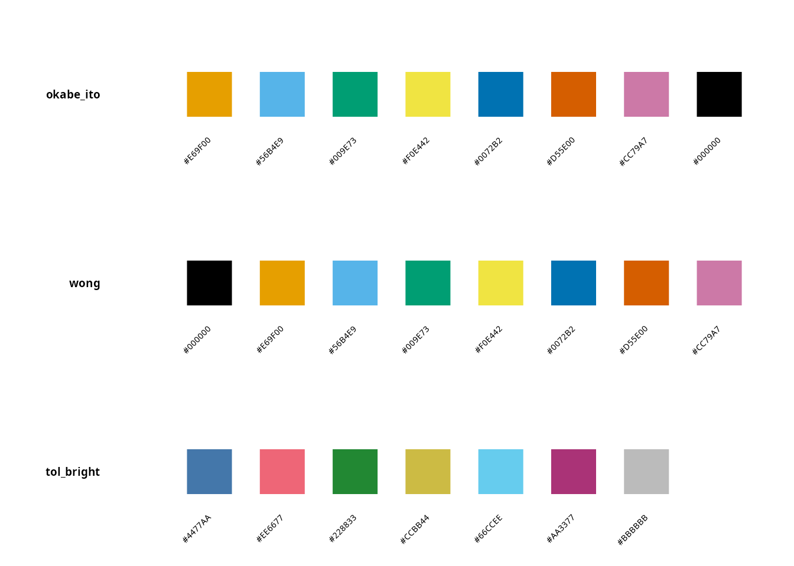
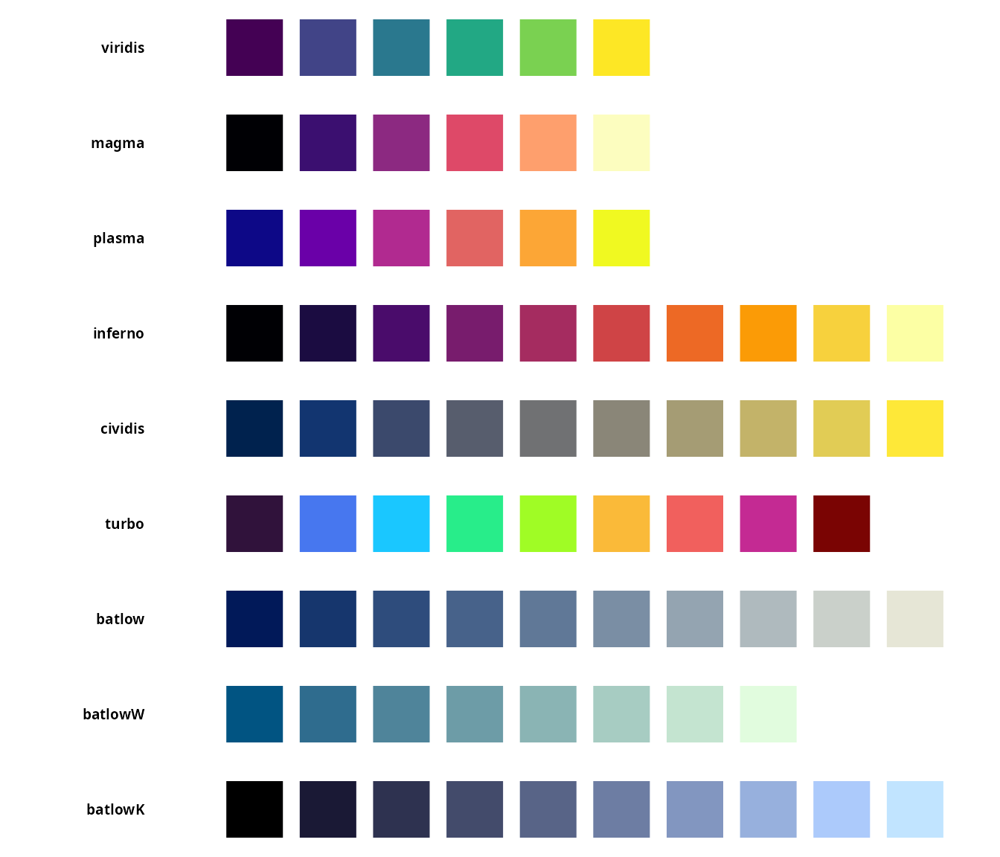
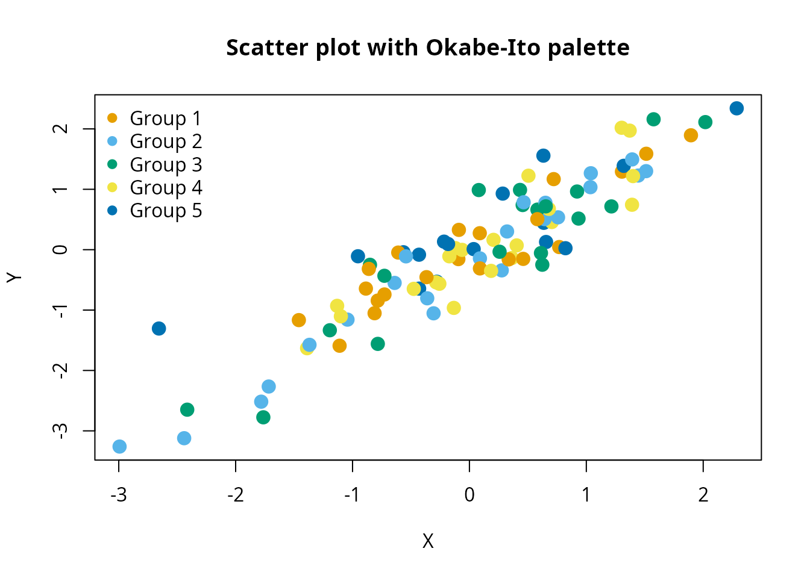

Introduction to koloRo: comprehensive color palettes for R
Source:vignettes/introduction.Rmd
introduction.RmdOverview
koloRo is a comprehensive R package providing 264 carefully curated color palettes across 15 categories. Whether you need colorblind-safe palettes for scientific publications, authentic historical colors from the Alhambra palace, chameleon species-inspired gradients, or modern design palettes, koloRo has you covered.
Quick start
Accessing palettes
The main function palettes() retrieves color palettes by
category or name:
# Get all palettes in a category
cb_palettes <- palettes(category = "colorblind")
names(cb_palettes)[1:10]
#> [1] "okabe_ito" "okabe_ito_extended" "wong"
#> [4] "tol_bright" "tol_high_contrast" "tol_vibrant"
#> [7] "tol_muted" "tol_light" "tol_medium"
#> [10] "tol_pale"
# Get a specific palette
okabe_ito <- palettes(palette = "okabe_ito")
okabe_ito
#> [1] "#E69F00" "#56B4E9" "#009E73" "#F0E442" "#0072B2" "#D55E00" "#CC79A7"
#> [8] "#000000"Listing available palettes
Use list_palettes() to see all available palettes:
# All palettes
all_palettes <- list_palettes()
head(all_palettes, 10)
#> palette_name category n_colors
#> 1 RElab_main RElab 5
#> 2 RElab_primary RElab 5
#> 3 RElab_extended RElab 9
#> 4 RElab_diverging RElab 9
#> 5 RElab_sequential RElab 9
#> 6 RElab_qualitative RElab 8
#> 7 scientific 10
#> 8 viridis scientific 6
#> 9 magma scientific 6
#> 10 plasma scientific 6
# Filter by category
colorblind_list <- list_palettes(category = "colorblind")
head(colorblind_list)
#> palette_name category n_colors
#> 1 okabe_ito colorblind 8
#> 2 okabe_ito_extended colorblind 10
#> 3 wong colorblind 8
#> 4 tol_bright colorblind 7
#> 5 tol_high_contrast colorblind 3
#> 6 tol_vibrant colorblind 7Visualizing palettes
# Single palette
plot_palette("okabe_ito")
# Compare multiple palettes
plot_palette(c("okabe_ito", "wong", "tol_bright"))
Palette categories
koloRo organizes palettes into 15 categories:
| Category | Description | Count |
|---|---|---|
| RElab | Custom palettes from RElab research group | 6 |
| scientific | Perceptually uniform (viridis, Crameri) | 17 |
| colorblind | Colorblind-safe (Okabe-Ito, Paul Tol, Wong) | 34 |
| alhambra | Authentic Nasrid dynasty historical pigments | 30 |
| chameleons | Chameleon species coloration patterns | 22 |
| natural | Natural phenomena (ocean, forest, sunset) | 41 |
| cultural | Cultural traditions (Japanese, Persian, etc.) | 23 |
| artistic | Art movements (impressionist, bauhaus, etc.) | 13 |
| seasonal | Seasonal color schemes | 8 |
| modern | Contemporary design (neon, vaporwave) | 12 |
| classic | Classic color theory | 16 |
| monochrome | Grayscale and single-hue scales | 11 |
| food | Food-inspired palettes | 11 |
| diverging | Diverging scales for bipolar data | 10 |
| qualitative | Categorical data palettes | 10 |
Exploring categories
# View all palettes in a category
plot_category("scientific", max_display = 10)
#> Showing first 10 of 18 palettes
Color manipulation
koloRo provides functions for manipulating colors:
Brightness adjustment
base_color <- "#1E4D8C" # Alhambra blue
lighter <- adjust_brightness(base_color, 0.4)
darker <- adjust_brightness(base_color, -0.4)
cat("Original:", base_color, "\n")
#> Original: #1E4D8C
cat("Lighter:", lighter, "\n")
#> Lighter: #7894BA
cat("Darker:", darker, "\n")
#> Darker: #122E54Shadows and highlights
shadow <- shadow_color(base_color, intensity = 0.4)
highlight <- highlight_color(base_color, intensity = 0.4)
cat("Shadow:", shadow, "\n")
#> Shadow: #1A3354
cat("Highlight:", highlight, "\n")
#> Highlight: #4577BAAdding transparency
# Add 50% transparency
transparent <- add_alpha(base_color, 0.5)
transparent
#> #1E4D8C
#> "#1E4D8C7F"Color mixing
color1 <- "#FF0000" # Red
color2 <- "#0000FF" # Blue
mixed <- mix_colors(color1, color2, ratio = 0.5)
cat("Mixed color:", mixed, "\n")
#> Mixed color: #800080Color harmonies
# Complementary color
comp <- complementary_color("#FF0000")
cat("Complementary of red:", comp, "\n")
#> Complementary of red: #00FFFF
# Analogous colors
analogs <- analogous_colors("#FF0000", n = 5, angle = 30)
cat("Analogous colors:", paste(analogs, collapse = ", "), "\n")
#> Analogous colors: #FF00FF, #FF0080, #FF0000, #FF8000, #FFFF00
# Triadic colors
triads <- triadic_colors("#FF0000")
cat("Triadic colors:", paste(triads, collapse = ", "), "\n")
#> Triadic colors: #FF0000, #00FF00, #0000FFCreating color ramps
Generate smooth color gradients from any palette:
# Create a 100-color gradient
gradient <- palette_ramp("viridis", n = 100)
head(gradient)
#> [1] "#440154" "#430456" "#430759" "#430B5B" "#430E5E" "#431160"
# Reverse direction
gradient_rev <- palette_ramp("viridis", n = 100, reverse = TRUE)Pattern colors
Generate color schemes for geometric patterns:
# Cyclic method - colors repeat in sequence
cyclic <- pattern_colors(15, "alhambra_nazari", method = "cyclic")
cyclic
#> [1] "#1E4D8C" "#C9A227" "#F5F0E6" "#2D5A3D" "#8B3A3A" "#1E4D8C" "#C9A227"
#> [8] "#F5F0E6" "#2D5A3D" "#8B3A3A" "#1E4D8C" "#C9A227" "#F5F0E6" "#2D5A3D"
#> [15] "#8B3A3A"
# Random method - random selection from palette
random_cols <- pattern_colors(15, "alhambra_nazari", method = "random", seed = 42)
# Gradient method - smooth interpolation
gradient_cols <- pattern_colors(15, "alhambra_nazari", method = "gradient")
# Alternating method - two colors alternate
alternating <- pattern_colors(15, "alhambra_nazari", method = "alternating")Integration with base R graphics
# Example scatter plot with koloRo colors
set.seed(42)
n <- 100
x <- rnorm(n)
y <- x + rnorm(n, sd = 0.5)
groups <- sample(1:5, n, replace = TRUE)
cols <- palettes(palette = "okabe_ito")[groups]
plot(x, y, col = cols, pch = 19, cex = 1.5,
main = "Scatter plot with Okabe-Ito palette",
xlab = "X", ylab = "Y")
legend("topleft", legend = paste("Group", 1:5),
col = palettes(palette = "okabe_ito")[1:5],
pch = 19, bty = "n")
Getting palette information
# Detailed information about a palette
info <- palette_info("alhambra_nazari")
info$name
#> [1] "alhambra_nazari"
info$category
#> [1] "alhambra"
info$n_colors
#> [1] 5
info$colors
#> [1] "#1E4D8C" "#C9A227" "#F5F0E6" "#2D5A3D" "#8B3A3A"Exporting palettes
# Export to hex format
export_palette("viridis", format = "hex")
#> index hex
#> 1 1 #440154
#> 2 2 #414487
#> 3 3 #2a788e
#> 4 4 #22a884
#> 5 5 #7ad151
#> 6 6 #fde725
# Export to RGB format
export_palette("viridis", format = "rgb")
#> index hex red green blue
#> 1 1 #440154 68 1 84
#> 2 2 #414487 65 68 135
#> 3 3 #2a788e 42 120 142
#> 4 4 #22a884 34 168 132
#> 5 5 #7ad151 122 209 81
#> 6 6 #fde725 253 231 37
# Save to file
export_palette("viridis", format = "rgb", file = "viridis_colors.csv")
#> Palette exported to: viridis_colors.csv
#> index hex red green blue
#> 1 1 #440154 68 1 84
#> 2 2 #414487 65 68 135
#> 3 3 #2a788e 42 120 142
#> 4 4 #22a884 34 168 132
#> 5 5 #7ad151 122 209 81
#> 6 6 #fde725 253 231 37Next steps
Explore the comprehensive vignettes for detailed guidance:
vignette("colorblind-safe") covers accessible visualization
best practices; vignette("alhambra-palettes") documents the
historical Nasrid dynasty pigments;
vignette("chameleon-palettes") provides scientific
references for species-based palettes;
vignette("scientific-palettes") covers perceptually uniform
colormaps for oceanography; and
vignette("ggplot2-integration") demonstrates seamless
integration with ggplot2.
References
Crameri, F., Shephard, G.E., & Heron, P.J. (2020). The misuse of colour in science communication. Nature Communications, 11, 5444. doi:10.1038/s41467-020-19160-7
Crameri, F. (2018). Scientific colour maps. Zenodo. doi:10.5281/zenodo.1243862
Okabe, M., & Ito, K. (2008). Color Universal Design (CUD): How to make figures and presentations that are friendly to colorblind people. JFly*. https://jfly.uni-koeln.de/color/
Wong, B. (2011). Points of view: Color blindness. Nature Methods, 8(6), 441. doi:10.1038/nmeth.1618
Tol, P. (2021). Colour schemes. SRON Technical Note SRON/EPS/TN/09-002. https://personal.sron.nl/~pault/
Fernández-Puertas, A. (1997). The Alhambra: From the ninth century to Yusuf I (1354). London: Saqi Books.